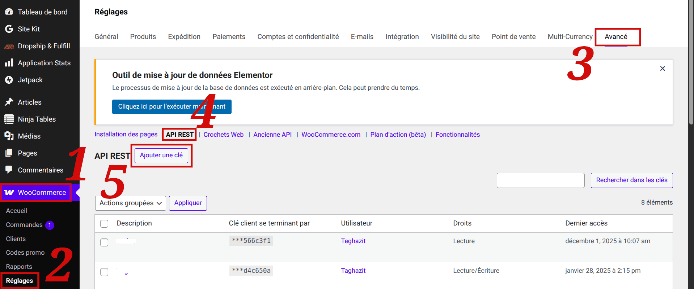
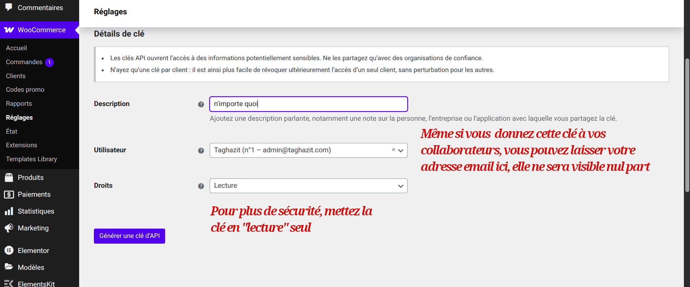
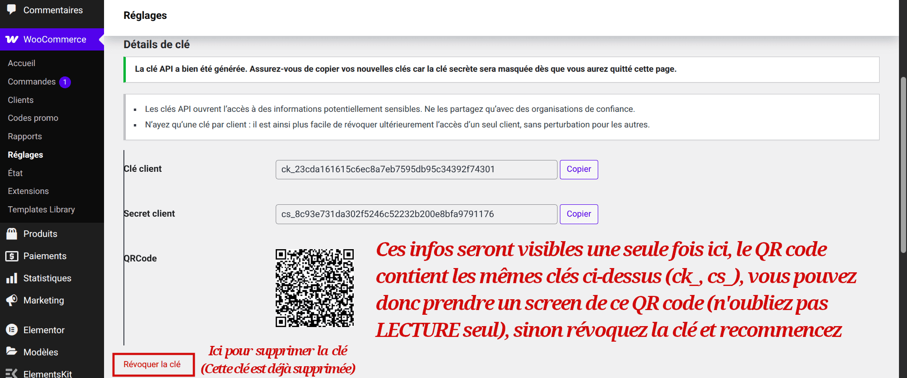

Suivez vos commandes WooCommerce en temps réel, directement depuis votre smartphone.
WooNotif est une application mobile pensée pour les propriétaires de boutiques WooCommerce qui veulent suivre leurs commandes sans ouvrir un ordinateur.
L'application ne stocke aucune donnée sur des serveurs distants : tout reste sur votre appareil.



Pour plus de sécurité, nous recommandons d’utiliser un compte dédié avec uniquement les permissions nécessaires.
Tous les détails sont expliqués dans notre politique de confidentialité.
Nous prévoyons d’ajouter prochainement :
Ces évolutions seront annoncées dans les futures mises à jour de l’application.
Cette page est uniquement informative et destinée à accompagner la fiche Google Play de l’application WooNotif.